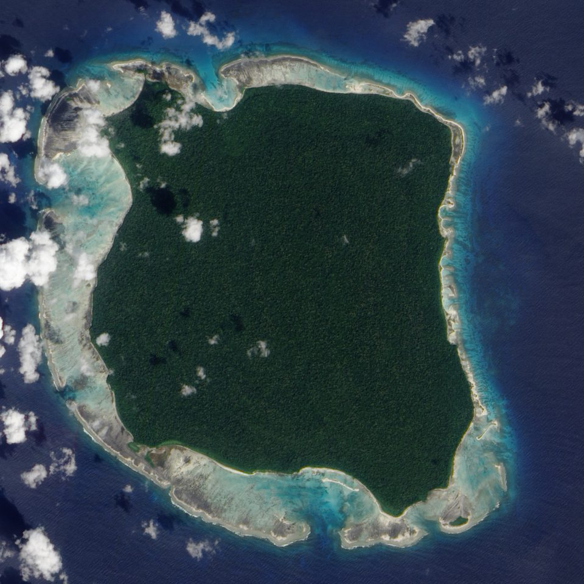
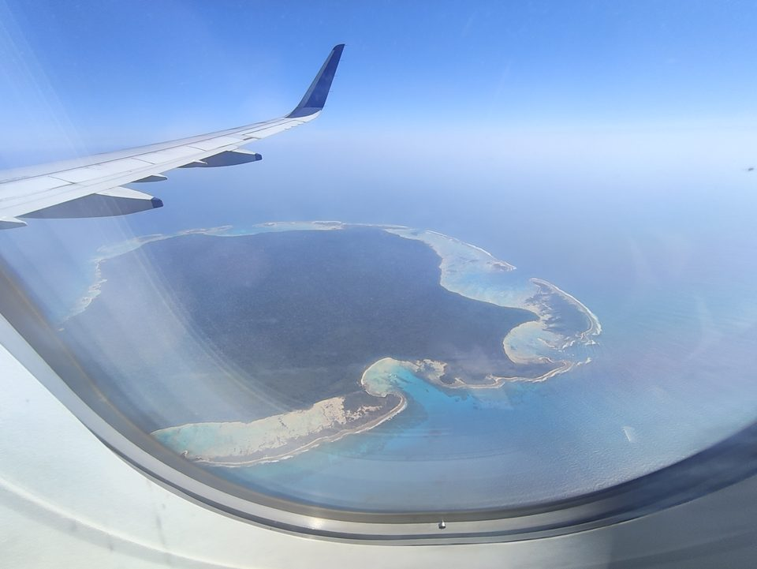

Las flechas de la isla Sentinel del Norte
Todos los demás dossieres de este archivo tratan de preguntas que todavía no logramos responder. Este trata de la única cuya respuesta existe, está viva, habla una lengua que nadie ha clasificado — y ya dejó claro, durante más de dos siglos, que no tiene intención de ser entrevistada.
- Dónde
- Archipiélago de Andamán, India
- Coordenadas
- 11°34′N 92°14′E
- Superficie
- 59,67 km²
- Población
- estimada entre 50 y 200
- Último contacto amistoso
- febrero de 1991
- Situación legal
- acercamiento prohibido
A unos cincuenta kilómetros al oeste de Port Blair, en el golfo de Bengala, hay una isla casi cuadrada — siete coma ocho kilómetros por siete — rodeada por un arrecife de coral que impide que cualquier embarcación de calado medio se acerque. Vista desde arriba, es una mancha de selva densa con una franja estrecha de arena clara. No hay puerto, no hay claro de aldea visible desde el aire, no hay humo permanente. Hay playa, selva y, de vez en cuando, figuras que salen de la selva.
Cuando una embarcación se acerca lo suficiente, esas figuras bajan hasta la línea del agua con arcos largos y disparan. Eso ocurrió en 1867, en 1974, en 1981, en 2004, en 2006 y en 2018. Es el dato más consistente que tenemos sobre ese lugar, y es prácticamente el único que se repite sin variación.
Lo que hace que Sentinel del Norte sea distinta de cualquier otro caso de este archivo es simple: aquí el obstáculo no es la erosión, ni el enterramiento, ni la falta de instrumentos. Es una decisión — tomada por personas vivas, comunicada con claridad absoluta, y finalmente respetada por un Estado nacional después de más de un siglo de insistir en lo contrario.
01Lo que se ve de lejos
Empiece por lo sólido. La isla tiene 59,67 km², poco más que la isla de Manhattan, y es territorio soberano de la República de la India dentro del territorio de Andamán y Nicobar. El arrecife que la rodea es la primera razón física del aislamiento: frena el acercamiento de cualquier casco mayor que una lancha y obliga a quien llega a hacer la última etapa en bote, expuesto, lentamente, a la vista de quien está en la playa.

Sobre la población, hay que ser honesto en cuanto al método. Todas las cifras que circulan se obtuvieron por conteo a distancia, desde barco o desde helicóptero, sumando las personas visibles en la orilla en un día determinado. El censo indio de 2001 registró 39 personas; el de 2011 registró 15 — cifra que la prensa india describió, con razón, como una conjetura. Una circunnavegación de 2014 contó 16. El manual del Anthropological Survey of India de 2016 trabaja con un rango de 100 a 150. La literatura más cautelosa habla de algo entre 50 y 200.

Sobre tecnología, lo que se sabe proviene de la observación directa y de objetos vistos en uso. Usan arco y flecha para la caza terrestre y canoas de fondo plano para pescar en la laguna, impulsadas con pértigas en lugar de remos. Las puntas de flecha y las hojas de azuela son más grandes y pesadas que las de los otros grupos andamaneses, y son de metal — recuperado de barcos encallados en el arrecife y trabajado por ellos. En 1974 aceptaron y se quedaron con ollas de aluminio dejadas en la playa.
Ese detalle del metal merece atención, porque desmonta por sí solo el cliché que acompaña al tema. Un pueblo que identifica hierro en el casco de un naufragio, lo extrae, lo reforma y lo adapta a su propia tecnología de caza no está congelado en ningún tiempo. Está haciendo exactamente lo que cualquier sociedad hace con un recurso nuevo: incorporar lo que sirve y descartar lo que no sirve.
02El inventario de los contactos
La lista completa de acercamientos documentados es lo bastante corta para caber en una página, y es el registro más útil que existe sobre el tema — porque muestra un patrón de comportamiento, no una sucesión de accidentes.
En 1771, el levantamiento hidrográfico de la Compañía de las Indias Orientales pasó de largo y anotó en el diario de a bordo una multitud de luces en la playa. Es la primera mención europea. Nadie desembarcó.
En 1867, el buque mercante Nineveh encalló en el arrecife. Ciento seis sobrevivientes llegaron a la playa y fueron atacados; resistieron algunos días hasta que la Marina Real los rescató. Ese es el registro fundador de la reputación de la isla, y es también el primer caso en que la respuesta llegó después de una llegada no solicitada.
En enero de 1880, el oficial colonial británico Maurice Vidal Portman desembarcó con una fuerza armada. Encontró la selva vacía y capturó a seis personas: una pareja de ancianos y cuatro niños. Los llevó a Port Blair. La pareja enfermó y murió en pocas semanas. Los niños fueron devueltos a la isla con regalos.
Si existe un hecho capaz de explicar una política de rechazo mantenida durante cinco generaciones, tiene fecha, nombre de funcionario e informe administrativo archivado. Sobre el desembarco de 1880
El intervalo siguiente es largo. La India retomó los acercamientos a partir de 1967, bajo el antropólogo Triloknath Pandit, del Anthropological Survey of India, con un método de dejar regalos en la orilla y retirarse. En 1974, un equipo de filmación acompañado de policía armada desembarcó para registrar un encuentro y dejó en la arena cocos, ollas de aluminio, un cerdo vivo, un carrito y una muñeca. La respuesta fue una lluvia de flechas; una de ellas alcanzó el muslo izquierdo del director. Los sentineleses alancearon y enterraron el cerdo y la muñeca, y se quedaron con los cocos y las ollas.
Vale la pena releer esa frase, porque es mucho más informativa de lo que parece. No fue un rechazo indiscriminado. Fue una selección: el alimento vegetal y el metal entraron; el cerdo vivo y la muñeca fueron alanceados y enterrados. Alguien allí miró ese conjunto de objetos, lo clasificó y decidió objeto por objeto.
El 2 de agosto de 1981, el carguero Primrose encalló en el arrecife durante el monzón. Los tripulantes vieron gente armada reunirse en la playa y el capitán emitió un pedido de auxilio en el que estimaba más de cincuenta arqueros y advertía que no podía garantizar la vida de la tripulación. Montaron guardia por turnos con pistolas de bengalas y barras de hierro hasta que un helicóptero contratado por una petrolera los rescató, cerca de una semana después. El casco oxidado del Primrose permaneció encallado allí durante décadas — y le proporcionó a la isla una cantidad notable de metal.
El 4 de enero de 1991, la rutina de regalos finalmente produjo el encuentro. Un equipo de trece personas, dirigido por S. Awaradi, con el médico Arun Mullick y la antropóloga Madhumala Chattopadhyay, arrojó cocos al agua. Hombres armados entraron en el mar para recogerlos, y la escena se repitió hasta que se acabaron los cocos. Ese mismo día, un joven apuntó el arco hacia Chattopadhyay — y una mujer sentinelesa hizo que bajara el arma. En la tercera salida, el equipo entró al agua junto al bote y entregó cocos en mano. Hubo un nuevo encuentro el 21 de febrero.
03El precedente de Andamán
Para entender por qué la India desistió, hay que mirar las islas vecinas — porque allí el experimento ya se hizo, y el resultado está contabilizado.
Cuando empezó el contacto sostenido, a fines del siglo XVIII, se estimaba que había unos siete mil andamaneses repartidos por el archipiélago. El primer asentamiento británico es de 1789; en cuatro años las enfermedades que trajo habían devastado a las poblaciones costeras. Después vinieron las epidemias de sarampión, neumonía y gripe. Una sola epidemia de sarampión en el siglo XIX mató a cerca de la mitad de la población andamanesa.
Las cifras del grupo Gran Andamanés cuentan el resto por sí solas: seiscientas personas en 1901, diecinueve en 1961. Hoy el grupo existe — son poco más de cincuenta — pero la mayor parte de sus lenguas murió con los últimos hablantes. Los jarawas eran 380 en el censo de 2011; los onges, 101.
El mecanismo es inmunológico y no tiene nada de misterioso. Una población separada del continente durante milenios no tiene anticuerpos contra el sarampión, la gripe, la tuberculosis, la tos ferina o la varicela. Basta un solo visitante asintomático. Y en una comunidad pequeña, la enfermedad simultánea de todos los adultos paraliza al mismo tiempo la caza, la pesca, la recolección de agua y el cuidado de los enfermos — de modo que la mortalidad real supera con creces la letalidad de la enfermedad en sí.
Fue ese razonamiento, y no una sensibilidad abstracta, lo que cerró el programa. Las visitas oficiales se interrumpieron a mediados de la década de 1990 — entre 1994 y 1997, según la fuente —, y la política pasó a ser descrita por sus propios ejecutores como hands-off, eyes-on: manos fuera, ojos encima. La Andaman and Nicobar Islands (Protection of Aboriginal Tribes) Regulation, de 1956, prohíbe viajar a la isla y acercarse a menos de cinco millas náuticas — unos 9,3 kilómetros. La Marina y la Guardia Costera patrullan el perímetro.
042004: la isla se elevó
El 26 de diciembre de 2004, el terremoto de Sumatra-Andamán — uno de los mayores jamás registrados por sismógrafo — desató el tsunami que mató a más de doscientas mil personas en torno al océano Índico. La placa se movió bajo el archipiélago entero. Partes de Andamán y Nicobar se hundieron entre uno y cuatro metros. Sentinel del Norte hizo lo contrario: se elevó.
El levantamiento fue del orden de uno a dos metros, y la consecuencia inmediata fue geográfica. El arrecife que rodeaba la isla emergió. Las lagunas donde se pescaba desaparecieron en casi la totalidad del perímetro, y solo quedó visible la del este. La línea de costa avanzó mar adentro. El 23 de abril de 2005, cuatro meses después, el microsatélite Proba de la Agencia Espacial Europea fotografió el resultado con el sensor CHRIS, a dieciocho metros de resolución: la isla aparecía literalmente demasiado alta en el agua.
Tres días después del terremoto, un helicóptero de la Guardia Costera india sobrevoló la isla para verificar si había sobrevivientes. La respuesta llegó en forma de flecha, disparada desde la playa contra la aeronave. Fue la confirmación, de lejos y sin contacto, de que el pueblo había sobrevivido y estaba en condiciones de reaccionar.
La parte que rara vez se cuenta es la que viene después. Con las lagunas secas, la pesca de aguas bajas — que dependía de ellas y de las canoas de pértiga — dejó de funcionar como antes. La isla probablemente tuvo que reorganizar su propia subsistencia en torno a una costa nueva. Cuando la tripulación del Primrose relató, en 1981, haber visto gente construyendo embarcaciones en la playa, el detalle pareció pintoresco. Después de 2004, parece otra cosa: la capacidad de rehacer la flota.
052018: el caso Chau
John Allen Chau tenía 26 años, era estadounidense, licenciado en ciencias del ejercicio, y planeaba evangelizar a los sentineleses desde la secundaria. En 2017 pasó por un entrenamiento de la organización misionera All Nations, en el que instructores representaban el papel de indígenas “hostiles”. Se vacunó, cumplió cuarentena, estudió nociones de lingüística y de primeros auxilios. La preparación fue real; la premisa era la falsa.
En octubre de 2018 se instaló en Port Blair y pagó veinticinco mil rupias a pescadores locales para que lo llevaran a las inmediaciones de la isla. Lo llevaron a altas horas de la noche del 14 de noviembre y los días 15 y 16 hizo acercamientos en kayak llevando una Biblia impermeable, tarjetas con dibujos, un pescado y una pelota de fútbol como regalos. Intentó hablar, cantó himnos y probó palabras en xhosa. En uno de los avances, un niño sentinelés disparó una flecha que atravesó la Biblia que él sostenía contra el pecho.
Volvió al barco, escribió en su diario que tal vez esa isla fuera el último reducto de Satanás en la Tierra, se preguntó si estaba enloqueciendo, y decidió intentarlo de nuevo. En la última salida mandó a los pescadores irse sin él. El 17 de noviembre, desde el mar, vieron cómo el cuerpo era arrastrado por la playa y enterrado en la arena.
El gobierno indio abrió una investigación, detuvo a siete personas por facilitar el acceso y, después de consultar a antropólogos, desistió de recuperar el cuerpo. La justificación fue exactamente la lógica de este dossier: el riesgo de un enfrentamiento con un equipo de rescate, y el riesgo sanitario de un desembarco, superaban cualquier beneficio. El cuerpo sigue allí.
Chau no fue el primero ni el último. En enero de 2006, dos pescadores indios pescaban cangrejo ilegalmente cerca de la isla cuando el barco derivó hacia la playa durante la noche; fueron asesinados, y el helicóptero enviado localizó los cuerpos enterrados, pero se retiró bajo las flechas. En diciembre de 2022, tres pescadores desaparecieron y su barco fue avistado en Sentinel. En marzo de 2025, otro ciudadano estadounidense desembarcó solo, dejó en la arena una lata de refresco y un coco, recogió muestras de arena y fue detenido al volver.
06Las lecturas, de la más sobria a la más improbable
El rechazo es una política, no un instinto
Es la lectura que sostiene el propio registro. En 1974 hubo selección de los regalos: los cocos y el aluminio entraron; el cerdo y la muñeca fueron sepultados. En 1991 hubo aceptación repetida de cocos, entrega en mano y la escena de la mujer que baja el arco de un hombre. En 2018, un adolescente disparó contra una Biblia y el cuerpo fue enterrado, no abandonado.
Nada de eso es reacción automática. Es un repertorio de respuestas distintas para situaciones distintas, con desacuerdo interno visible. La conclusión más económica es que allí existe una decisión colectiva sobre los extranjeros, y que fue tomada — y es sostenida — por gente que sabe lo que hace.
El rechazo es memoria del siglo XIX
La hipótesis es que la política de rechazo se endureció a partir de 1880, cuando Portman se llevó a seis personas y devolvió a cuatro niños huérfanos y posiblemente enfermos. Hay quien sostiene que el episodio pudo haber introducido una epidemia en la isla, y que la lección se incorporó a la tradición oral.
Es plausible y tiene un hecho documentado detrás. Lo que falta es verificación: no tenemos acceso a la memoria oral sentinelesa, y el Nineveh muestra que la respuesta armada ya existía en 1867, trece años antes de Portman. El trauma colonial probablemente reforzó una práctica — pero no la inventó.
El aislamiento es abandono, y deberíamos contactarlos con cuidado
Existe una posición académica minoritaria, defendida principalmente por antropólogos que trabajan con pueblos aislados en la Amazonía, según la cual el aislamiento absoluto es insostenible a largo plazo: la presión externa solo aumenta, el contacto terminará ocurriendo de forma desordenada, y sería mejor que fuera planificado, con equipo médico presente y vacunación previa.
El contraargumento está en las cifras de la sección 03. Un contacto planificado con equipo médico fue exactamente lo que se intentó con los grandes andamaneses, y el grupo cayó de seiscientas personas a diecinueve. El contacto con los jarawas, iniciado por ellos mismos en 1997–98, trajo brotes de sarampión y exposición turística en la carretera que atraviesa su territorio. El historial regional no favorece la tesis.
Son "humanos de la Edad de Piedra", detenidos en el tiempo
Es el marco que domina la cobertura popular del tema y no resiste el primer dato. Trabajan metal recuperado de naufragios. Adoptaron el aluminio en 1974. Sobrevivieron al cambio de la costa después de que el terremoto de 2004 levantó el arrecife y secó las lagunas. Seleccionan con criterio los objetos desconocidos.
Ninguna población humana está detenida en el tiempo. Miles de años de historia transcurrieron en Sentinel del Norte como en cualquier otro lugar — guerras, inventos, disputas, cambios de reglas, muertes, nacimientos. La diferencia es que de esa historia no tenemos ni una línea. Llamar a eso "Edad de Piedra" es confundir nuestra ignorancia con su biografía.
07Cronología
- 1771Un levantamiento de la Compañía de las Indias Orientales pasa de largo y registra luces en la playa. Primera mención escrita.
- 1789Primer asentamiento británico en el archipiélago. En cuatro años las enfermedades devastan a las poblaciones costeras de Andamán.
- 1867El mercante Nineveh encalla en el arrecife. Ciento seis sobrevivientes resisten ataques hasta ser rescatados por la Marina Real.
- enero de 1880Maurice Vidal Portman desembarca con tropa y captura a seis personas. La pareja de ancianos muere en Port Blair; los cuatro niños son devueltos.
- 1901 · 1961El grupo Gran Andamanés cae de seiscientas personas a diecinueve — el costo demográfico del contacto, medido en censos oficiales.
- 1967La India retoma los acercamientos bajo Triloknath Pandit, con el método de dejar regalos en la orilla y retirarse.
- 1974Un equipo de filmación desembarca; una flecha alcanza el muslo del director. El cerdo y la muñeca son alanceados y enterrados; los cocos y las ollas, aceptados.
- 2 de agosto de 1981El carguero Primrose encalla. La tripulación monta guardia durante cerca de una semana hasta ser rescatada en helicóptero.
- 4 de enero de 1991Primer contacto pacífico documentado. Cocos entregados en mano; una mujer sentinelesa hace que un joven baje el arco. Nuevo encuentro el 21 de febrero.
- mediados de la década de 1990Se cierra el programa oficial de visitas. La política pasa a ser explícitamente de no contacto.
- 26 de diciembre de 2004El terremoto de Sumatra-Andamán eleva la isla entre uno y dos metros, deja al descubierto el arrecife y seca las lagunas. Tres días después, una flecha responde al helicóptero de la Guardia Costera.
- enero de 2006Dos pescadores mueren después de que su barco deriva hacia la playa. El helicóptero enviado localiza los cuerpos enterrados, pero se retira bajo las flechas.
- 17 de noviembre de 2018El misionero John Allen Chau muere tras desembarcar solo. Siete intermediarios son detenidos; la India desiste de recuperar el cuerpo.
- diciembre de 2022 · marzo de 2025Tres pescadores desaparecen y su barco es avistado en la isla. Dos años después, otro estadounidense desembarca solo, deja objetos en la arena y es detenido al regresar.
08Lo que sigue abierto
Casi la totalidad. No sabemos cuántos son, ni con qué margen de error. No sabemos qué lengua hablan — solo se sabe que no es inteligible para los jarawas ni para los onges, lo que sugiere una separación muy antigua de los demás grupos andamaneses, pero la clasificación sigue en blanco. No sabemos cómo se organizan, qué heredaron, qué cuentan sobre 1880 o sobre 2004, ni si lo cuentan.
Tampoco sabemos qué ocurrió allí durante la mayor parte del tiempo en que estuvieron allí. La profundidad de la ocupación humana en el archipiélago se mide en decenas de miles de años, y nada de eso está registrado en ningún lugar que podamos consultar.
Tres preguntas siguen abiertas, y solo una de ellas es sobre ellos. Si el aislamiento es sostenible — la presión de pescadores, turistas y misioneros no ha dejado de crecer desde 2018, y la vigilancia de un perímetro de nueve kilómetros en mar abierto es limitada. Qué le hizo el levantamiento de 2004 a la isla a largo plazo — un arrecife expuesto y lagunas secas alteran la base alimentaria de una población pequeña, y nadie tiene cómo medirlo sin acercarse. Y por cuánto tiempo aguantamos no saber — que es la pregunta sobre nosotros.
09Preguntas frecuentes
¿Dónde está la isla Sentinel del Norte?
En el archipiélago de Andamán, en el golfo de Bengala, a unos cincuenta kilómetros al oeste de Port Blair. Es territorio de la India, dentro de Andamán y Nicobar, y tiene 59,67 km², casi un cuadrado de selva rodeado por un arrecife. Vea lo que se ve de lejos.
¿Qué tribu vive en la isla Sentinel del Norte?
Los sentineleses, un pueblo que rechaza el contacto. Cuántos son, no se sabe: los conteos se hacen a distancia y oscilan — el censo de 2011 registró 15, el manual de 2016 del Anthropological Survey of India trabaja con 100 a 150 —, y la literatura más cautelosa habla de algo entre 50 y 200. Su lengua no ha sido clasificada.
¿Por qué es peligrosa la isla Sentinel del Norte?
Porque quien se acerca suele ser recibido con flechas — así fue en 1867, 1974, 1981, 2004, 2006 y 2018. El registro, sin embargo, muestra una decisión colectiva, no un reflejo: en 1991 hubo encuentros pacíficos. Y el peligro corre en los dos sentidos, porque un solo visitante puede llevar enfermedades contra las que ellos no tienen anticuerpos. Vea el precedente de Andamán.
¿Se puede visitar la isla Sentinel del Norte?
No. Una regulación de 1956 prohíbe viajar a la isla y acercarse a menos de cinco millas náuticas, unos 9,3 kilómetros, y la Marina y la Guardia Costera patrullan el perímetro. Desde mediados de la década de 1990 la política india es de no contacto.
¿Quién murió en la isla Sentinel del Norte?
El caso más conocido es el del misionero estadounidense John Allen Chau, muerto en noviembre de 2018 después de desembarcar solo; la India desistió de recuperar el cuerpo. En 2006, dos pescadores que derivaron hasta la playa también fueron asesinados. Vea el caso Chau.
10Fuentes consultadas
Este dossier es un texto propio. Las fuentes de abajo se consultaron para verificar fechas, cifras y atribuciones; ninguna fue reproducida.
- Entradas enciclopédicas consolidadas sobre la isla Sentinel del Norte, los sentineleses y los pueblos andamaneses — cronología de los contactos, datos censales y legislación.
- Andaman and Nicobar Islands (Protection of Aboriginal Tribes) Regulation, 1956 — base legal de la prohibición de acercamiento.
- Agencia Espacial Europea — registro del microsatélite Proba/CHRIS sobre el levantamiento de la isla tras el terremoto del 26 de diciembre de 2004, imagen del 23 de abril de 2005.
- Survival International — posición institucional sobre los pueblos no contactados y sobre el historial demográfico de los grupos andamaneses contactados.
- Registros públicos sobre la expedición del 4 de enero de 1991 — equipo, método y relato de Madhumala Chattopadhyay y Triloknath Pandit.
- Cobertura periodística y documentación de la investigación india sobre la muerte de John Allen Chau, noviembre de 2018.
- National Geographic — reportaje sobre el aislamiento de la isla y sobre la presión externa contemporánea.